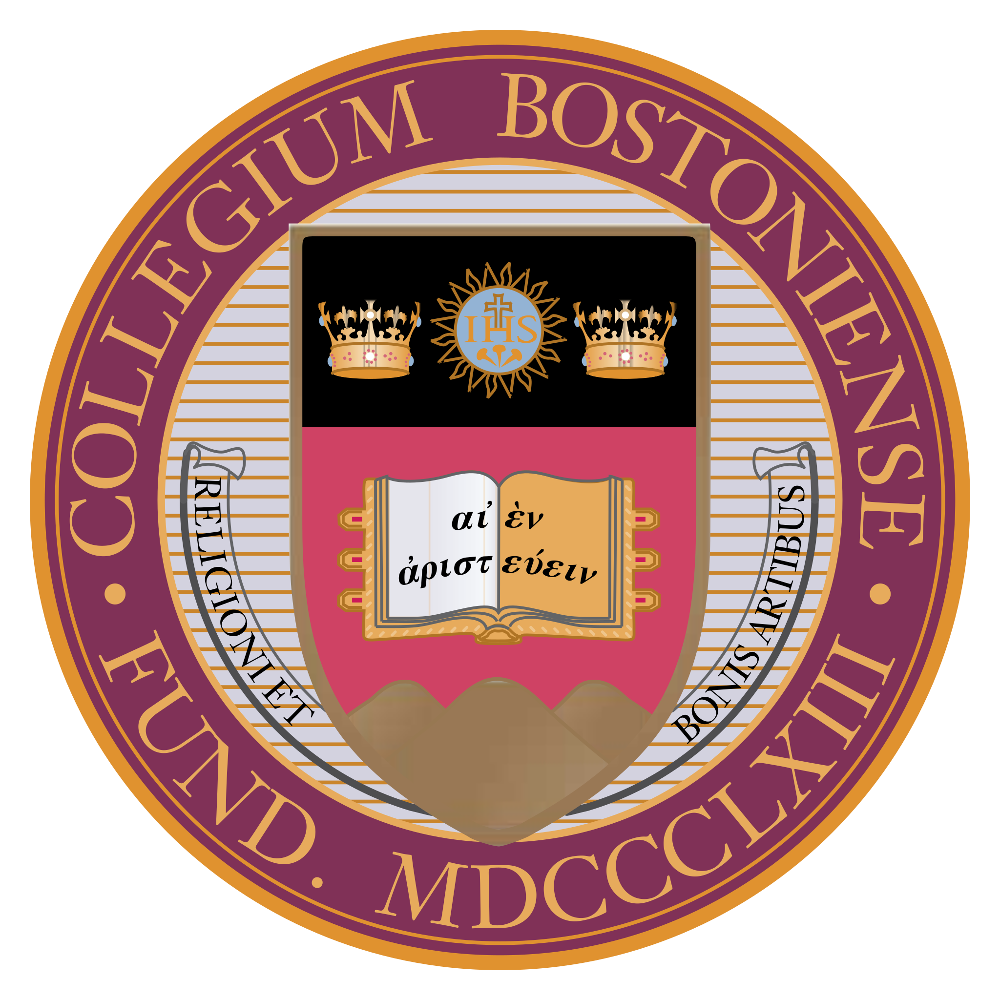
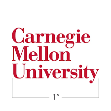

뉴아이비리그 대학교정보
NEW IVY LEAGUE SCHOOLS
Boston College
보스턴 칼리지

- 학교명: Boston College (BC) (보스턴 칼리지 or 보스턴대학교)
- 학교 위치: Chestnut Hill, MA (메사추세츠주 체슬넛힐)
- 학교 순위: U.S. News지에서 미국전역 35위 (2021년 기준)
- 합격율: 26%
- 유명 학과: 금융학 (3위), 경제학 (15위), 정치학 (16위)...
- 더욱 자세한 내용은 Boston College 웹사이트를 참조하세요. 웹사이트: https://www.bc.edu/
Emory University
에모리대학교

- 학교명: Emory University (에모리대학교)
- 학교 위치: Atlanta, GA (조지아주 아틀란타)
- 학교 순위: U.S. News지에서 미국전역 21위 (2021년 기준)
- 합격율: 16%
- 유명 학과: 간호학 (2위), 경영학(26위), 생물학(30위) 등.
- 더욱 자세한 내용은 Emory 웹사이트를 참조하세요. 웹사이트: https://www.emory.edu/home/index.html
Carnegie Mellon University
카네기멜론대학교

- 학교명: Carnegie Mellon University (CMU) (카네기멜론대학교)
- 학교 위치: Pittsburgh, PA (펜실베니아주 피츠버그)
- 학교 순위: U.S. News지에서 미국전역 26위 (2021년 기준)
- 합격율: 15%
- 유명 학과: 컴퓨터공학(1위), 인공지능학(1위), 시스템공학(2위) 등.
- 더욱 자세한 내용은 Carnegie Mellon 웹사이트를 참조하세요. 웹사이트: https://www.cmu.edu/
Washington University in St. Louis
세인트 루이스 워싱턴 대학교

- 학교명: Washington University in St.Louis (Washu) (세인트 루이스 워싱턴대학교)
- 학교 위치: St.Louis, Missouri (미주리주 세인트루이스)
- 학교 순위: U.S. News지에서 미국전역 16위 (2021년 기준)
- 합격율: 14%
- 유명 학과: 생명학(13위), 유전학(1위) 경영학(36위) 등.
- 더욱 자세한 내용은 Washu 웹사이트를 참조하세요. 웹사이트: https://wustl.edu/
Tufts University
터프츠 대학교

- 학교명: Tufts University (터프츠 대학교)
- 학교 위치: St.Louis, Missouri (미주리주 세인트루이스)
- 학교 순위: U.S. News지에서 미국전역 30위 (2021년 기준)
- 합격율: 15%
- 유명 학과: 경제학 (35위), 수의학과 (12위) 등.
- 더욱 자세한 내용은 Washu 웹사이트를 참조하세요. 웹사이트: https://www.tufts.edu/